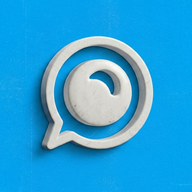

ホーム
person
add_to_home_screen
ホーム画面に追加できます
インストール
close
arrow_back
設定
アカウント
公開鍵
—
リモート署名 (NIP-46 bunker)
状態
確認中…
bunker URI
key
接続
photo_camera
QRをスキャン
link_off
切断
home
search
検索
新規投稿
close
image
写真を追加（10MBまで）
キャンセル
投稿
QRをスキャン
カメラを起動しています…
キャンセル
検索
search
閉じる